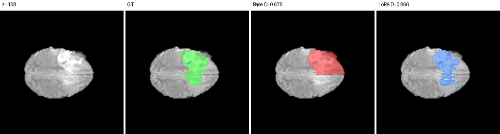

Overall 1st Place · Hack The Nest 2026全场冠军 · Hack The Nest 2026
Our four-person team built KAI on a Raspberry Pi 5. I connected the camera, display and audio hardware. KAI reads grocery receipts into the pantry inventory, scans printed recipes and answers spoken questions about ingredients.我们四个人用树莓派 5 做了 KAI。我把摄像头、显示屏和音频设备接入系统。它能扫小票更新库存、识别纸质菜谱，也能回答「家里还有哪些食材」。
We compared six contact-aided filters in Isaac Lab. Over a 10-second simulation, using four-foot contact and estimating IMU bias reduced 3D velocity RMSE from 0.6488 to 0.3123 m/s against the single-foot baseline.我们在 Isaac Lab 里比较了六种利用足端接触信息的滤波器。在 10 秒仿真中，用四足接触估计 IMU 偏置后，三维速度 RMSE 从单足基线的 0.6488 降至 0.3123 m/s。
I built the MRI preprocessing and inference pipeline for BraTS and fine-tuned SAM2 with LoRA. Starting from one annotated slice, the model propagates the tumor mask through the MRI volume in both directions.我做了 BraTS 脑部 MRI 的预处理和推理流程，用 LoRA 微调 SAM2。标注一张切片后，模型从这一层向前、向后逐层推断肿瘤掩膜。
Compare segmentation results对照分割结果

Slice 108, left to right — MRI, manual mask, base SAM2, LoRA-tuned SAM2.第 108 层切片，从左到右为 MRI 原图、人工标注、原始 SAM2 预测和 LoRA 微调后的预测。
Storage driver R&D intern. Investigated UFS Host Performance Booster in C driver code and benchmarked F2FS and ext4 with iozone and dd.存储驱动研发实习。在 C 驱动代码中分析 UFS HPB 的行为，用 iozone 和 dd 对比 F2FS 和 ext4 的存储性能。
University of Michigan密歇根大学
Graduate Student Grader, Electrical and Computer Engineering.在电气与计算机工程系担任 Graduate Student Grader，负责课程评分。